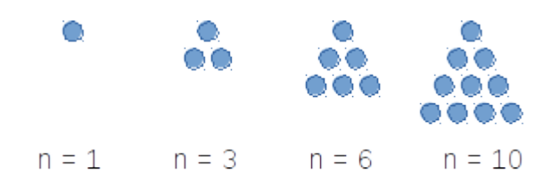

CSE 20 Winter 2026
Practice for Test 1
In machine learning, clustering can be used to group similar data for prediction and recommendation. For example, each Netflix user’s viewing history can be represented as a \(n\)-tuple indicating their preferences about movies in the database, where \(n\) is the number of movies in the database. Each element in the \(n\)-tuple indicate the user’s rating of the corresponding movie: \(1\) indicates the person liked the movie, \(-1\) that they didn’t, and \(0\) that they didn’t rate it one way or another.
Consider the following algorithm for determining if a user’s viewing history represents strong opinions on many movies.
procedure \(\textit{opinion}\)(\((r_1, \ldots, r_n)\): a \(n\)-tuple of ratings; \(c\): a nonnegative integer) \(sum\) := \(0\) for \(i\) := \(1\) to \(n\) if \(r_i \neq 0\) \(sum\) := \(sum + 1\) return \(sum \geq c\)
When \(n = 3\), describe the set of all \(n\)-tuples representing user ratings
By the roster method.
With set builder notation.
Using a recursive definition.
What are the possible return (output) values of this algorithm?
Trace the computation of \(opinion( (-1, 0, 0, 0, 1, 1,-1), 2)\).
Give an example of a nonnegative integer \(c\) so that, no matter which \(n\)-tuple \((r_1, \ldots, r_n)\) we consider, \(opinion( (r_1, \ldots, r_n), c)\) will have the same value. What value is it?
Give a recursive definition for the set \(\mathbb{N}\).
Use the recursive definition from part (a) to give a recursive definition for the function with domain \(\mathbb{N}\), codomain \(\mathbb{N}\) which computes, for input \(i\), the sum of the first \(i\) powers of \(2\). For example, on input \(0\), the function evaluates to \(2^0\), namely to \(1\). On input \(1\), the function evaluates to \(2^0 + 2^1\), namely \(3\). On input \(2\), the function evaluates to \(2^0 + 2^1 + 2^2\), namely \(7\).
Compute the ternary (base 3) expansion of \(28\).
Compute the product of \((6A)_{16}\) and \((11)_{16}\), without converting either number to another base.
Confirm your answer for part (b) by converting \((6A)_{16}\) and \((11)_{16}\) to decimal, multiplying them, and converting the product to base \(16\).
How many bits will there be in the binary (base \(2\)) expansion of \(2020\)? Can you compute this without fully converting \(2020\) to base \(2\)?
Give an example of a number that can be represented in base 2 fixed-width 3, but not in base 2 expansion.
Give an example of a number that can be represented in base 2 expansion, but not in base 2, fixed-width 3 expansion.
Give the representation of -7 in sign-magnitude width 3 and 2s complement width 3. Then do the same for width 4.
Give the representation of 10.5625 in fixed-width base-2 expansion with integer width 4 and fractional width 9.
A triangular number (or triangle number) counts the objects that can form an equilateral triangle, as in the diagram below. The \(n^{\text{th}}\) triangular number is the sum of the first \(n\) integers, as shown in the following figure illustrating the first four triangular numbers (what is the fifth one?):

Design a circuit that takes four inputs \(x_0, x_1, x_2, x_3\) and outputs True (T or 1) if the integer value \((x_3x_2x_1x_0)_{2,4}\) is a triangular number, and False (F or 0) otherwise. You may assume that 0 is not a triangular number. (Credit: UBC Department of Computer Science)
Draw a logic circuit that uses exactly three gates and is logically equivalent to \[q \leftrightarrow (p \wedge r)\] You may (only) use AND, OR, NOT, and XOR gates.
Write a compound proposition which is logically equivalent to \[(p \oplus q) \leftrightarrow r\] You may only use the logical operators negation (\(\neg\)), conjunction \((\wedge)\), and disjunction \((\vee)\).
Find a compound proposition that is in DNF (disjunctive normal form) and is logically equivalent to \[(p \vee q \vee \neg r) \wedge (p \vee \neg q \vee r ) \wedge (\neg p \vee q \vee r)\]
2
\(p\) is “The display is 13.3-inch"
\(r\) is “There is at least 128GB of flash storage"
\(u\) is “There is at least 512GB of flash storage"
\(q\) is “The processor is 2.2 GHz"
\(s\) is “There is at least 256GB of flash storage"
Are the statements \[p \to (r \vee s \vee u) \qquad, \qquad q \to (s \vee u) \qquad, \qquad p \leftrightarrow q \qquad, \qquad \neg u\] consistent? If so, translate to English a possible assignment of truth values to the input propositions that makes all four statements true simultaneously.
Consider this statement in English:
It’s not the case that both the display is 13.3-inch and the processor is 2.2 GHz.
Determine whether each of the compound propositions below is equivalent to the negation of that statement, and justify your answers using either truth tables or other equivalences.
Possible compound propositions:
\(\neg p \vee \neg q\)
\(\neg (p \to \neg q)\)
\(\neg ( p \wedge q)\)
\((\neg p \leftrightarrow \neg q) \wedge p\)
Consider the compound proposition \[(p \wedge q) \to (r \vee s \vee u)\] Express the contrapositive of this conditional as a compound proposition.
Then, give an assignment of truth values to each of the input propositional variables for which the original compound proposition is True but its converse is False.
Over the domain \(\{ 1,2,3,4,5\}\) give an example of predicates \(P(x), Q(x)\) which demonstrate that \[(\forall x P(x)) \vee (\forall x Q(x)) \qquad \text{is not logically equivalent to} \qquad \forall x (~ P(x) \vee Q(x) ~)\]
Over the domain \(\{0,1,2\}\), give an example of predicates \(P(x), Q(x)\) for which all of these statements are true: \[\forall x (P(x) \to Q(x))\] \[\exists x \, P(x)\] \[\exists x \, \neg P(x)\] \[\exists x \, \neg Q(x)\]
Recall that \(S\) is defined as the set of all RNA strands, where each strand is a nonempty string made of the bases in \(B = \{\texttt{A},\texttt{U},\texttt{G},\texttt{C}\}\). Recall the definition of the following predicates: \(L_{\texttt{A}}\) with domain \(S\) is defined recursively by:
Basis step: \(L_{\texttt{A}}(\texttt{A}) = T\), \(L_{\texttt{A}}(\texttt{C}) = L_{\texttt{A}}(\texttt{G}) = L_{\texttt{A}}(\texttt{U}) = F\)
Recursive step: If \(s \in S\) and \(b \in B\), then \(L_{\texttt{A}}(sb) = L_{\texttt{A}}(s)\)
\(P_{\texttt{A}\texttt{U}\texttt{C}}\) with domain \(S\) is defined as the predicate whose truth set is the collection of RNA strands where the string \(\texttt{A}\texttt{U}\texttt{C}\) is a substring (appears inside \(s\), in order and consecutively)
\(L\) with domain \(S \times \mathbb{Z}^+\) is defined by, for \(s \in S\) and \(n \in \mathbb{Z}^+\), \[L( s, n) = \begin{cases} T &\qquad\text{if $rnalen(s) = n$}\\ F &\qquad\text{otherwise}\\ \end{cases}\]
Give a witness for \(\exists s_1 \, \exists s_2 \,(L(s_1, 4) \land L(s_2,4) \land \neg ( s_1 = s_2) )\) where \(S\) is the set of RNA strands, \(L(s, n)\) is a predicate with domain \(S \times \mathbb{Z}^+\) that is true when \(s\) has length \(n\)
Give a counterexample that disproves \(\forall i \,(\neg L(\texttt{A}\texttt{C}\texttt{U}, i))\)
Determine which of the following statements is True or False (you do not need to prove your answer).
\(\exists n \in \mathbb{Z}^+~ \forall s \in S~ ( P_{\texttt{A}\texttt{U}\texttt{C}}(s) \to \lnot L(s,n) )\)
\(\exists n \in \mathbb{Z}^+~ \forall s \in S~ ( P_{\texttt{A}\texttt{U}\texttt{C}}(s) \land \lnot L(s,n) )\)
\(\forall s \in S~\exists n \in \mathbb{Z}^+~ ( P_{\texttt{A}\texttt{U}\texttt{C}}(s) \lor \lnot L(s,n) )\)
\(\forall s \in S~\exists n \in \mathbb{Z}^+~ (L(s,n) \to \lnot P_{\texttt{A}\texttt{U}\texttt{C}}(s))\)
CSE 20 Winter 2026
Practice for Test 2
Express each of the following statements symbolically using quantifiers, variables, propositional connectives, and predicates (make sure to define the domain and the meaning of any predicates you introduce). Then, express its negation as a logically equivalent compound proposition without a \(\neg\) in front. Decide whether the statement or its negation is true, and prove it.
If \(m\) is an integer, \(m^2 + m +1\) is odd.
For all integers \(n\) greater than \(5\), \(2^n-1\) is not prime.
If \(n\) and \(m\) are even integers, then \(n - m\) is even.
Prove each of the following claims. Use only basic definitions and general proof strategies in your proofs; do not use any results proved in class / the textbook as lemmas. You may use basic properties of real numbers that we stated (without proof) in class, e.g. that the difference of two integers is an integer.
The difference of any rational number and any irrational number is irrational.
If \(a, b, c\) are integers and \(a^2 + b^2 = c^2\), then at least one of \(a\) and \(b\) is even.
For any integer \(n\), \(n^2 + 5\) is not divisible by \(4\).
For all positive integers \(a,b,c\), if \(a \not | bc\) then \(a \not | b\). (The notation \(a \not | b\) means “a does not divide b”).
Bonus: Watch the video https://www.youtube.com/watch?v=MhJN9sByRS0 and write down the statement and one or both of the proofs described using the notation, definitions, and proof strategies from CSE 20.
Prove or disprove each of the following statements.
For all sets \(A\) and \(B\), \(\mathcal{P}(A) \cup \mathcal{P}(B) = \mathcal{P}(A \cup B)\).
For all sets \(A\) and \(B\), \(\mathcal{P}(A) \cap \mathcal{P}(B) = \mathcal{P}(A \cap B)\).
For any sets \(A, B, C, D\), if the Cartesian products \(A\times B\) and \(C \times D\) are disjoint then either \(A\) and \(C\) are disjoint or \(B\) and \(D\) are disjoint (or both).
There are sets \(A, B\) such that \(A \in B\) and \(A \subseteq B\).
For all sets \(A, B, C\): \(A \cap B = \emptyset\) and \(B \cap C = \emptyset\) if and only if \((A \cap B) \cap C = \emptyset\).
Prove the following statements:
\(\forall s \in S \, (~rnalen(s) = basecount(s,\texttt{A}) + basecount(s,\texttt{C}) + basecount(s,\texttt{U}) + basecount(s,\texttt{G})~)\) where \(S\) RNA strands and the functions \(rnalen\) and \(basecount\) are define recursively as: \[\begin{array}{llll} & & \textit{rnalen} : S & \to \mathbb{Z}^+ \\ \textrm{Basis Step:} & \textrm{If } b \in B\textrm{ then } & \textit{rnalen}(b) & = 1 \\ \textrm{Recursive Step:} & \textrm{If } s \in S\textrm{ and }b \in B\textrm{, then } & \textit{rnalen}(sb) & = 1 + \textit{rnalen}(s) \end{array}\] \[\begin{array}{llll} & & \textit{basecount} : S \times B & \to \mathbb{N} \\ \textrm{Basis Step:} & \textrm{If } b_1 \in B, b_2 \in B & \textit{basecount}(b_1, b_2) & = \begin{cases} 1 & \textrm{when } b_1 = b_2 \\ 0 & \textrm{when } b_1 \neq b_2 \\ \end{cases} \\ \textrm{Recursive Step:} & \textrm{If } s \in S, b_1 \in B, b_2 \in B &\textit{basecount}(s b_1, b_2) & = \begin{cases} 1 + \textit{basecount}(s, b_2) & \\ \qquad \textrm{when } b_1 = b_2 &\\ \textit{basecount}(s, b_2) & \\ \qquad \textrm{when } b_1 \neq b_2 &\\ \end{cases} \end{array}\]
\(\forall l_1 \in L \, \forall l_2 \in L \, (\textit{sum}(\textit{concat}(l_1, l_2)) = \textit{sum}(l_1) + \textit{sum}(l_2))\), where the function \(\textit{concat}\) is defined as: \[\begin{array}{llll} & & \textit{concat} : L \times L & \to L \\ \textrm{Basis Step:} & \textrm{If } l \in L & \textit{concat}([], l) & = l \\ \textrm{Recursive Step:} & \textrm{If } l, l' \in L\textrm{ and }n \in \mathbb{N}\textrm{, then } & \textit{concat}((n, l), l') & = (n, \textit{concat}(l, l')) \end{array}\] and the function \(\textit{sum} : L \to \mathbb{N}\) that sums all the elements of a list and is defined by: \[\begin{array}{llll} & & \textit{sum} : L & \to \mathbb{N} \\ \textrm{Basis Step:} & & \textit{sum}([]) & = 0 \\ \textrm{Recursive Step:} & \textrm{If } l \in L, n \in \mathbb{N} & \textit{sum}((n, l)) & = n + \textit{sum}(l) \end{array}\]
At time 0, a particle resides at the point 0 on the real line. Within 1 second, it divides into 2 particles that fly in opposite directions and stop at distance 1 from the original particle. Within the next second, each of these particles again divides into 2 particles flying in opposite directions and stopping at distance 1 from the point of division, and so on. Whenever particles meet they annihilate (leaving nothing behind). How many particles will there be at time \(2^{11} -1\)? You do not need to justify your answer. Hint: Derive a formula for the number/ locations of particles at time \(2^n-1\) for arbitrary positive integer n, prove the formula using induction, and apply it when \(n=11\).
Prove that every positive integer has a base \(3\) expansion. Hint: use strong induction.
Prove each of the following claims.
For the “function" \(f: \mathbb{Z} \to \{0, 1, 2, 3 \}\) given by \(f(x) = x~\text{\bf mod}~5\), it is not the case that every element of the domain maps to exactly one element of the codomain (that is, it is not a well-defined function).
The “function" \(f: \mathcal{P}( \mathbb{Z}^+) \to \mathbb{Z}\) given by \[f(A) = \text{the maximum element in A}\] is not well-defined.
There is a one-to-one function with domain \(\{a,b,c\}\) and codomain \(\mathbb{R}\).
There is an onto function with domain \(R\) and codomain \(\{ \pi, \frac{1}{17} \}\), where \(R\) is the set of user ratings in a database with 5 movies.
The Cartesian product \(\mathbb{Z}^+ \times \{ a,b,c \}\) is countable.
The interval of real numbers \(\{x \in \mathbb{R} ~\mid~ 5 \leq x \leq 8\}\) is uncountable. Hint: you may use the fact that the unit interval \(\{ x \in \mathbb{R} ~\mid~ 0 \leq x \leq 1\}\) is uncountable.